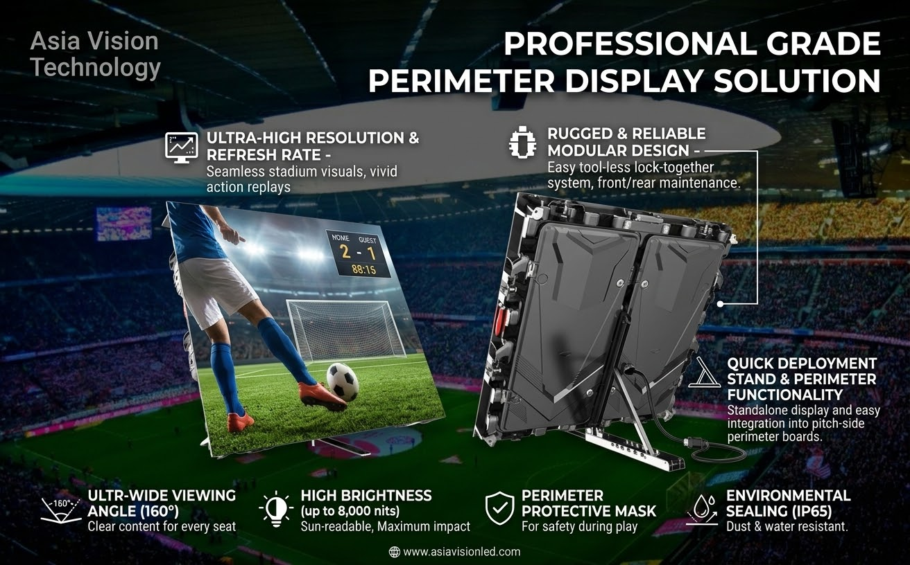
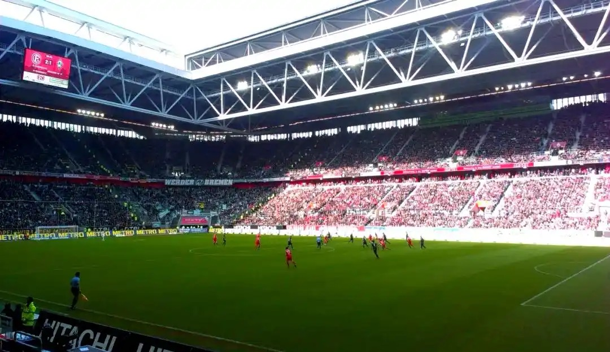

By David
On a match day the screens stop being equipment and become an operations tool. They carry the score, they carry the sponsor rotation, they carry the replay the crowd reacts to, and they all have to work at the same time, under one operator, for the length of the event. A screen that fails in the week is an inconvenience; a screen that fails during the match is a visible operational failure.
This guide looks at the event side of a sports display rather than the hardware: who runs the screens, what has to happen on the day, and what to rehearse before it.
The output during an event is layered, and the layers have different owners and different tolerances for failure.
| Layer | What it carries | If it fails |
|---|---|---|
| Score and clock | Live match state, fed from the official timing or scoring system | Immediate and public |
| Replay and highlights | Broadcast-fed clips for the crowd | Noticeable, recoverable |
| Sponsorship rotation | Contractual exposure across the boards | A commercial shortfall, logged |
| Crowd and safety content | Messaging, notices, and at some events safety information | Required to work |
| Atmosphere content | Pre-match, half-time and post-match material | Cosmetic |
The score layer has no tolerance for latency or error, and the sponsorship layer has no tolerance for a board dropping out of step. Those two layers drive the architecture more than the atmosphere content does.
One party has to own the output on the day, and the display system has to make that control reliable.
At a venue running its own operation, a control position handles score, replay, sponsorship rotation and crowd content, with an operator who can see the state of every screen. Where a competition brings its own production staff, control passes to them for the event and the venue's screens become part of the competition's output. In both cases the requirement is the same: a single point of control that can be trusted, and a system that reports what is actually on each board rather than what was intended.
Sponsorship exposure is sold in time, so a rotation that stalls is a commercial issue rather than a technical one.
That makes two things matter. First, every board in a set has to stay in step, which is why boards from different suppliers are the most common source of a broken rotation. Second, the rotation has to be observable and recoverable — an operator needs to know when a board has dropped out and be able to bring it back without stopping the event.
Where a competition controls the rotation, the venue's job is to give that competition a system it can drive. Where the venue sells its own inventory, the venue carries the commitment, and the same requirements apply.

Not every event uses the permanent installation, and the difference changes what the screens have to be.
A permanent venue installation is specified for a long life in one place, which favours durability, service access and integration with the building. A temporary event installation, brought in for a tournament, a cup final or a touring competition, is specified for setup speed, weight and rigging simplicity, because it is assembled, used and struck within days. The same match may involve both.
Where temporary screens are used, the constraints are dominated by logistics rather than lifespan: how quickly the boards go up, how they are carried, and how they lock together on ground that may or may not be level. That is a different product decision from a permanent pitch-side installation, even though both end up as boards around the same pitch.

The screens outside the bowl carry the event too.
A media centre carries the feed for the press and broadcasters, and a mixed zone needs readable signage for movement and identification. Concourses carry the match feed and sponsor content to people who are not in their seats, and hospitality areas carry the same feed to a different audience. These screens are closer to being display infrastructure than broadcast hardware, but they are part of the same event operation and they break the same way if they are not planned together.
The faults that matter only appear when everything runs at once.
A rehearsal should run the full sequence under match conditions: score and clock integration, replay sources, sponsorship rotation across every board, and the transitions between them. It should be done at match-day brightness, with the staff who will actually operate the system, because the operational errors live with the people and not with the panels.
Where a competition takes control, the rehearsal is also the handover — the moment the venue's system is proved to the competition's operators before it matters.
For event use, the manufacturer's contribution is as much about predictability as about specification.
Control architecture that supports synchronised rotation and per-board status, refresh and brightness data for the broadcast requirement, and clear terms on warranty response, because a screen that is out for a match is a screen that failed publicly. Where screens are rented and moved, weight and setup data matter as much as the panel itself.
Our factory runs 8 IC production lines and 7 LED SMT production lines under ISO 9001:2015, with CE, FCC and RoHS certification, a 15 to 20 working day lead time and a three-year warranty. For pitch-side and event boards the usual match is the COB ZH series for a sealed, high-brightness surface, with the COB Z rental series where boards are rigged and moved between events.
For the hardware side, see football stadium LED displays and the stadium perimeter buying guide.
Send your specifications for a detailed LED display price quote with UL/ETL certification.
Request Price Quote Chat on WhatsApp